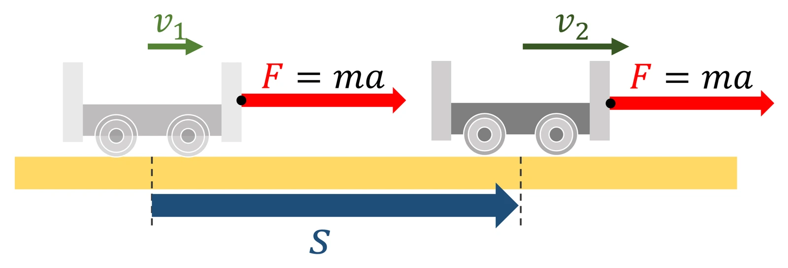

대학 일반물리 실험 1 · 6주차 · 일과 운동 에너지
실험에서 정지한 20 kg 상자를 당기는 힘 F(40~200 N), 줄의 각도 θ(0~60°), 운동 마찰 계수(0·0.2·0.4)를 바꿔 5 m 끌고, 당긴 힘의 일·마찰의 일·알짜일·끝 속력·평균 일률을 기록했습니다. 100 N, μₖ 0.2에서 0°는 알짜일 304 J, 30°는 287 J, 60°는 141 J이었고, 모든 기록이 v² = (2/m)·W알짜 직선에 놓였습니다. 일의 정의, 일–운동 에너지 정리, 일률을 정리합니다.
실험 데이터 되짚기
실험 안내: 당기는 힘 F 슬라이더(40~200 N), 줄의 각도 θ 슬라이더(0~60°), 운동 마찰 계수 μₖ 버튼(0·0.2·0.4)을 정하고 5 m 끌기를 누르면 F·θ·μₖ·알짜일·v·P가 자동 기록됩니다. 수평 성분이 마찰력보다 작거나 줄이 상자를 들어 올리면 기록되지 않습니다. 힘과 각도를 바꿔 4개 이상 기록하면 ✅ 데이터 검증 탭에 v² − 알짜일 그래프(기울기로 질량 역산)와 각도별 알짜일 표가 나옵니다.
| F (N) | θ (°) | μₖ | W알짜 (J) | v (m/s) | P (W) |
|---|---|---|---|---|---|
| 100 | 0 | 0.2 | 304 | 5.51 | 276 |
| 100 | 30 | 0.2 | 287 | 5.36 | 232 |
| 100 | 60 | 0.2 | 141 | 3.75 | 94 |
| 100 | 30 | 0 | 433 | 6.58 | 285 |
| 150 | 30 | 0.4 | 408 | 6.38 | 415 |
줄을 비스듬히 당기면 수평 성분(F cosθ)이 줄어 당긴 힘의 일이 작아지지만, 위 성분(F sinθ)이 수직 항력과 마찰을 줄여 손해 일부를 메웁니다. 그래서 μₖ = 0.2에서는 0°(304 J)보다 약 11°(314 J)가 조금 낫고, 30°·60°는 더 작습니다. 모든 줄에서 v²/W알짜 = 2/m = 0.1 kg⁻¹입니다.
(φ: 힘과 변위 사이 각). 변하는 힘은 .
W알짜 = ΔK = ½mv² − 0 — 가속도나 시간을 몰라도 처음·끝 두 점만으로 속력을 구합니다. 따라서 v² − W알짜 그래프는 기울기 2/m 인 직선입니다.
교재 그림
알짜힘이 한 일만큼 운동 에너지가 바뀐다

알짜힘 F가 거리 s 동안 한 일 Fs가 운동 에너지 변화 ½mv₂² − ½mv₁²와 같습니다. 가속도나 걸린 시간을 몰라도 처음과 끝 속력만으로 계산할 수 있어요.
움직여 보기
줄을 비스듬히 당기면 일은 얼마나 할까?
줄을 세우면 주황 수평 성분(일을 하는 부분)은 줄지만, 위 성분이 수직 항력 N과 마찰을 줄여 줍니다. 오른쪽 아래 곡선의 꼭대기는 tanθ = μk인 각(μk 0.2이면 약 11°)입니다. 중력과 N은 변위에 수직이라 일이 0입니다. (m = 20 kg, d = 5 m, g = 9.8)
P = dW/dt = F·v. 평균 일률 = WF / 걸린 시간. 같은 일을 빨리 할수록 일률이 큽니다.
· 실제로는 정지 마찰 계수가 운동 마찰 계수보다 커서 처음에 더 큰 힘이 필요합니다.
· 줄의 탄성, 바닥의 고르지 않음은 무시했습니다.
m = 20 kg, d = 5 m, g = 9.8 m/s² · v² − W알짜 기울기 2/m = 0.100 kg⁻¹
N = 196 − 100 × sin30° = 146 N, 마찰력 0.2 × 146 = 29.2 N. WF = 100 × cos30° × 5 = 433.0 J, Wf = −29.2 × 5 = −146.0 J, W알짜 = 287.0 J. v = = ≈ 5.36 m/s. 중력과 수직 항력은 변위에 수직이라 일이 0입니다.
W알짜 = d[F(cosθ + μₖ sinθ) − μₖ mg]가 최대인 조건은 tanθ = μₖ → θ = arctan 0.2 ≈ 11.3°. 이때 cosθ + 0.2 sinθ = ≈ 1.0198이므로 W알짜 = 5 × (101.98 − 39.2) ≈ 314 J — 0°의 304 J보다 큽니다.